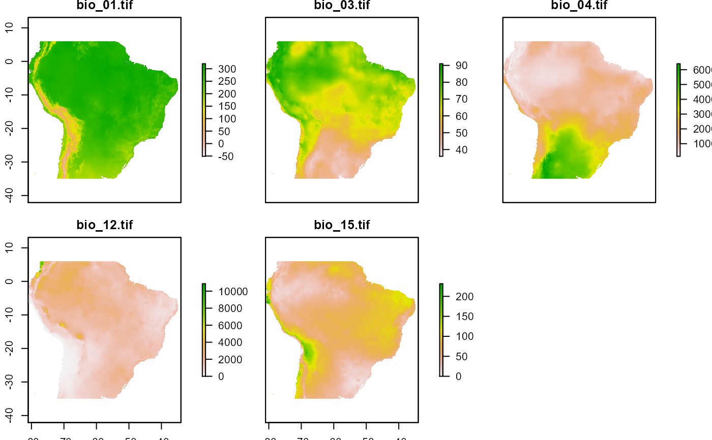

A list of RasterBrick with Bioclimatic variables (Bio1, Bio3, Bio4, Bio12 and Bio15) from a portion of South America (source GCM downscaled data portal: http://ccafs-climate.org/downscaling/). This dataset contains projections for 2080 based on MOHC HadGEM2-ES model for the representative concentration pathway of 4.5 and 8.5.
env_futAn object of class list of length 2.
require(ENMTML)
require(raster)
data("env_fut")
env_fut
#> $`2080_4.5`
#> class : RasterBrick
#> dimensions : 246, 282, 69372, 5 (nrow, ncol, ncell, nlayers)
#> resolution : 0.1666667, 0.1666667 (x, y)
#> extent : -81, -34, -35, 6 (xmin, xmax, ymin, ymax)
#> crs : +proj=longlat +datum=WGS84 +no_defs
#> source : memory
#> names : bio_01.tif, bio_03.tif, bio_04.tif, bio_12.tif, bio_15.tif
#> min values : -51, 36, 147, 0, 0
#> max values : 320.2500, 91.0000, 6404.5000, 10873.2500, 231.6667
#>
#>
#> $`2080_8.5`
#> class : RasterBrick
#> dimensions : 246, 282, 69372, 5 (nrow, ncol, ncell, nlayers)
#> resolution : 0.1666667, 0.1666667 (x, y)
#> extent : -81, -34, -35, 6 (xmin, xmax, ymin, ymax)
#> crs : +proj=longlat +datum=WGS84 +no_defs
#> source : memory
#> names : bio_01.tif, bio_03.tif, bio_04.tif, bio_12.tif, bio_15.tif
#> min values : -32.75, 35.00, 156.25, 0.00, 0.00
#> max values : 363.25, 90.75, 6556.00, 10199.25, 246.00
#>
#>
plot(env_fut$`2080_4.5`)

plot(env_fut$`2080_8.5`)